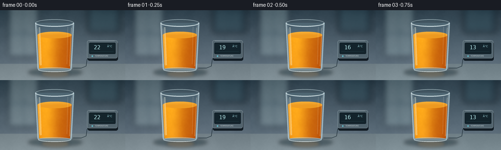
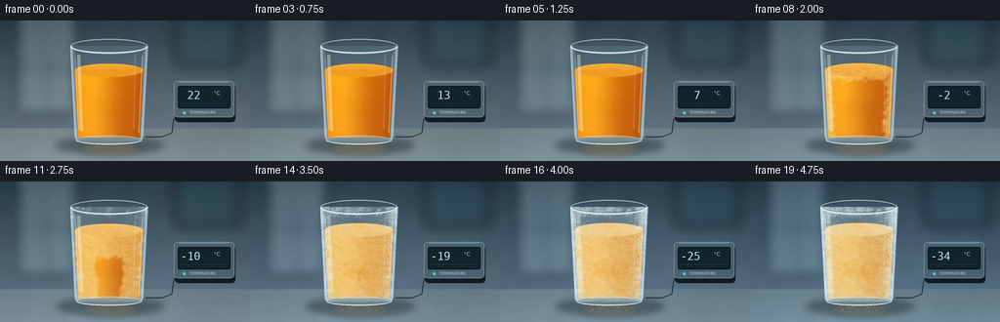
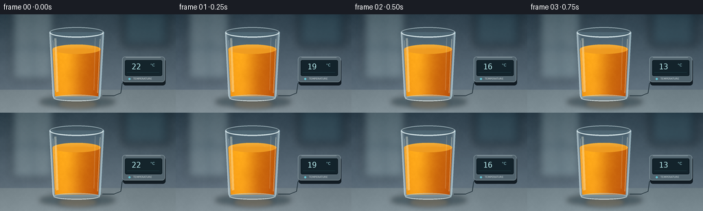

CODING AGENTS AS PIXEL WORLD MODELS
traex/GPT-6.1-Sol · phygen_092
点击播放 · 原生 RGB 像素
逐轮保存的候选
回放视频、检查图与代码变化。
每份候选均可单独播放。实际图片检查记录在下方工具轨迹中。
候选 01播放与检查图
点击播放 · 原生 RGB 像素


展开代码变化
--- 上一保存版本
+++ 本次保存版本
@@ -0,0 +1,239 @@
+from pathlib import Path
+import json, math
+import numpy as np
+from PIL import Image, ImageDraw, ImageFilter, ImageFont
+import artifact_io
+
+ROOT=Path(__file__).resolve().parent
+SPEC=json.loads((ROOT/'task_spec.json').read_text())
+W,H=SPEC['width'],SPEC['height']; S=4
+w,h=W*S,H*S
+rng=np.random.default_rng(92071)
+Y,X=np.mgrid[0:h,0:w].astype(float); X/=S; Y/=S
+
+def smooth(a,b,x):
+ q=np.clip((x-a)/(b-a),0,1); return q*q*(3-2*q)
+
+def noise(scale):
+ a=rng.random((max(2,int(h/scale)),max(2,int(w/scale))))
+ return np.asarray(Image.fromarray((a*255).astype('uint8')).resize((w,h),Image.Resampling.BICUBIC),float)/255
+n1=noise(45); n2=noise(12); n3=noise(3)
+texture=(n1-.5)*.5+(n2-.5)*.32+(n3-.5)*.18
+fine=rng.normal(0,1,(h,w))
+
+def layer(im): return Image.new('RGBA',im.size,(0,0,0,0))
+def ellipse(draw,box,fill,outline=None,width=1):
+ draw.ellipse(tuple(int(v*S) for v in box),fill=fill,outline=outline,width=max(1,int(width*S)))
+def line(draw,pts,fill,width=1):
+ draw.line([(int(x*S),int(y*S)) for x,y in pts],fill=fill,width=max(1,int(width*S)))
+def rect(draw,box,fill,radius=0,outline=None,width=1):
+ draw.rounded_rectangle(tuple(int(v*S) for v in box),int(radius*S),fill=fill,outline=outline,width=max(1,int(width*S)))
+def composite(im,over): return Image.alpha_composite(im,over)
+def blend(a,c,alpha):
+ if np.ndim(c)==1: c=np.array(c)[None,None,:]
+ return a*(1-alpha[...,None])+c*alpha[...,None]
+
+# Background: softly defocused cold-room wall, a stone work surface, and a quiet window reflection.
+bg=np.zeros((h,w,3),float)
+vign=np.clip(((X-125)/170)**2+((Y-72)/105)**2,0,1)
+for k,(top,bot) in enumerate([(52,116),(70,131),(81,143)]):
+ bg[:,:,k]=top+(bot-top)*Y/144-vign*13
+bg+=texture[:,:,None]*7
+base=Image.fromarray(np.uint8(np.clip(bg,0,255))).convert('RGBA')
+b=layer(base);d=ImageDraw.Draw(b)
+rect(d,(17,-18,79,96),(166,197,204,68),3)
+rect(d,(21,-10,73,91),(193,213,212,65),2)
+line(d,[(48,-10),(48,99)],(42,66,79,130),4)
+line(d,[(15,49),(78,49)],(55,83,98,100),4)
+rect(d,(178,-6,247,48),(17,40,52,100),4)
+rect(d,(184,1,239,41),(48,78,89,110),4)
+base=composite(base,b.filter(ImageFilter.GaussianBlur(6*S)))
+# Table is lit from the broad window to the left.
+a=np.asarray(base.convert('RGB'),float)
+table=smooth(109.5,111,Y)
+stone=np.empty_like(a)
+for k,c in enumerate((109,123,129)):
+ stone[:,:,k]=c+(Y-110)*.45+np.exp(-((X-76)/100)**2)*10+texture*6+fine*.25
+a=blend(a,stone,table)
+base=Image.fromarray(np.uint8(np.clip(a,0,255))).convert('RGBA')
+b=layer(base);d=ImageDraw.Draw(b)
+ellipse(d,(57,119,168,137),(10,29,35,105));ellipse(d,(76,121,151,131),(7,25,33,100))
+base=composite(base,b.filter(ImageFilter.GaussianBlur(3.4*S)))
+# Subtle orange reflection in the worktop.
+b=layer(base);d=ImageDraw.Draw(b)
+ellipse(d,(83,123,143,139),(231,147,58,43))
+base=composite(base,b.filter(ImageFilter.GaussianBlur(3*S)))
+# Cable and temperature meter, constant composition throughout the timelapse.
+b=layer(base);d=ImageDraw.Draw(b)
+line(d,[(149,119),(166,119),(176,115),(178,101),(183,96)],(31,47,55,255),1.2)
+rect(d,(179,65,241,104),(18,28,35,255),4)
+rect(d,(178,62,240,99),(83,100,109,255),4,outline=(155,171,177,255),width=.6)
+rect(d,(182,67,236,90),(20,36,43,255),2,outline=(7,20,26,255),width=.8)
+line(d,[(183,63),(234,63)],(194,205,210,190),.6)
+ellipse(d,(187,93,190,96),(101,193,206,255))
+font_tiny=ImageFont.truetype('/usr/share/fonts/truetype/dejavu/DejaVuSans.ttf',int(3.8*S))
+d.text((194*S,92*S),'TEMPERATURE',font=font_tiny,fill=(215,224,224,235))
+base=composite(base,b)
+
+cx=111.5
+# Thick-walled, very slightly tapered, clear tumbler.
+left=72+(np.clip(Y,26,122)-26)*.051
+right=151-(np.clip(Y,26,122)-26)*.051
+body=(X>=left)&(X<=right)&(Y>=26)&(Y<=123)
+# Curved thick glass base mask.
+body &= ~((Y>120)&(((X-cx)/34.8)**2+((Y-120)/6.4)**2>1))
+bodyf=body.astype(float)
+# All random detail is anchored to the glass, never changes between frames.
+clusters=[]
+for i in range(180):
+ side=-1 if i%2 else 1
+ yy=rng.uniform(26,120)
+ xx=(72+(yy-26)*.051+rng.uniform(0,8)) if side<0 else (151-(yy-26)*.051-rng.uniform(0,8))
+ if i<50: xx=rng.uniform(76,147); yy=rng.uniform(27,34)
+ clusters.append((xx,yy,rng.uniform(2,6),rng.uniform(0,math.pi*2),rng.uniform(.3,.96)))
+# Ice facets in the juice volume.
+facets=[]
+for i in range(180):
+ xx=rng.uniform(78,145);yy=rng.uniform(49,119); r=rng.uniform(1.1,4.7)
+ ang=rng.uniform(0,2*math.pi)
+ pts=[(xx+r*math.cos(ang+j*2*math.pi/3),yy+r*.62*math.sin(ang+j*2*math.pi/3)) for j in range(3)]
+ facets.append((xx,yy,pts,rng.uniform(.5,1)))
+
+frames=[]
+for frame in range(SPEC['frames']):
+ t=frame/(SPEC['frames']-1)
+ freeze=smooth(.20,.93,t)
+ frost=smooth(.27,1.0,t)
+ arr=np.asarray(base.convert('RGB'),float).copy()
+ # The ambient illumination becomes moderately colder, rather than turning the juice blue.
+ arr*=np.array([1-.12*t,1-.025*t,1+.035*t])
+ # Bent background behind the transparent glass and bright refractive side edges.
+ rx=np.clip(((X-cx)*.8+cx)*S,0,w-1).astype(int)
+ refr=np.asarray(base.convert('RGB'),float)[np.arange(h)[:,None],rx]
+ glass=refr*.83+np.array([26,35,40])
+ side_dist=np.minimum(X-left,right-X)
+ gleam=np.exp(-((side_dist-1.1)/1.1)**2)*.8+np.exp(-((side_dist-3.4)/1.5)**2)*.18
+ glass=blend(glass,np.array([200,219,226]),np.clip(gleam,0,1))
+ arr=blend(arr,glass,bodyf*.8)
+ # Orange juice level and upper elliptical free surface, rising very slightly as it freezes.
+ sy=51-1.75*freeze
+ liq=((X>left+3.1)&(X<right-3.1)&(Y>=sy)&(Y<120)).astype(float)
+ surf=(((X-cx)/35)**2+((Y-sy)/7.0)**2<=1).astype(float)
+ liq=np.maximum(liq,surf)
+ liq*=bodyf
+ radial=np.clip((X-cx)/35,-1,1)
+ light=np.exp(-((radial+.47)/.62)**2)
+ orange=np.empty_like(arr)
+ orange[:,:,0]=211+36*light-16*radial+texture*9
+ orange[:,:,1]=113+48*light-19*radial+texture*10
+ orange[:,:,2]=12+14*light+texture*6
+ depth=(Y-sy)/70
+ orange-=np.clip(depth,0,1)[...,None]*np.array([7,11,0])
+ # Freezing propagates inward from the cold walls and down from the upper surface.
+ edge=np.minimum(X-left-3,right-3-X)
+ topdist=(Y-sy)*.75
+ dist=np.maximum(0,np.minimum(edge,topdist))
+ front=freeze*43-3+texture*7+np.sin(Y*.65+X*.3)*.7
+ ice=smooth(-2,2,front-dist)*liq
+ icy=np.empty_like(arr)
+ icy[:,:,0]=230+light*13+texture*12
+ icy[:,:,1]=171+light*21+texture*16
+ icy[:,:,2]=71+light*26+texture*19
+ icecolor=blend(orange,icy,ice*.77)
+ arr=blend(arr,icecolor,liq)
+ # The exposed meniscus becomes an opaque, faceted sheet instead of producing floating cubes.
+ surfc=np.zeros_like(arr);slight=np.clip((sy-Y)/8,0,1)
+ surfc[:,:,0]=239+slight*10
+ surfc[:,:,1]=156+slight*27
+ surfc[:,:,2]=34+slight*30
+ surfc=blend(surfc,np.array([244,212,149]),freeze*(.7+texture*.3))
+ arr=blend(arr,surfc,surf*.93)
+ # Fine stable pulp in liquid; scattering grains in the newly solid juice.
+ grains=np.clip((n3-.5)*5,0,1)*ice*.10
+ arr=blend(arr,np.array([255,236,182]),grains)
+ # Translucent milky frost is strongest along the sides, rim and bottom.
+ strength=(.25+.75*np.exp(-np.maximum(side_dist,0)/7))
+ strength+=.42*np.exp(-((Y-29)/7)**2)+.18*np.exp(-((Y-119)/8)**2)
+ fog=np.clip(frost*strength*(.62+texture*.8),0,.66)*bodyf
+ arr=blend(arr,np.array([215,235,239]),fog)
+ im=Image.fromarray(np.uint8(np.clip(arr,0,255))).convert('RGBA')
+ # Subsurface broken crystalline facets.
+ ov=layer(im);dd=ImageDraw.Draw(ov)
+ for xx,yy,pts,jitter in facets:
+ ix=int(xx*S); iy=int(yy*S)
+ al=int(ice[iy,ix]*42*jitter)
+ if al:
+ dd.polygon([(int(x*S),int(y*S)) for x,y in pts],fill=(255,233,175,al))
+ line(dd,pts[:2],(255,246,219,int(al*1.7)),.23)
+ # Hairline crystalline veins on the solid surface.
+ for k in range(11):
+ angle=2*math.pi*k/11+.3
+ length=28*freeze
+ pts=[(cx+math.cos(angle)*r,sy+math.sin(angle)*r*.17+math.sin(r*.32+k)*.35) for r in np.linspace(0,length,25)]
+ if freeze>.12: line(dd,pts,(255,246,218,int(70*freeze)),.35)
+ im=composite(im,ov)
+ # Condensation resolves to dendritic hoarfrost. Each cluster grows from a fixed seed.
+ ov=layer(im);dd=ImageDraw.Draw(ov)
+ for xx,yy,r,ang,onset in clusters:
+ growth=smooth(onset-.25,onset+.15,frost)
+ if growth<.01: continue
+ for arm in range(5):
+ aa=ang+arm*2*math.pi/5
+ end=(xx+math.cos(aa)*r*growth,yy+math.sin(aa)*r*growth)
+ line(dd,[(xx,yy),end],(231,247,250,int(130*growth)),.32)
+ for f in [.35,.58,.78]:
+ px=xx+(end[0]-xx)*f;py=yy+(end[1]-yy)*f
+ for sign in [-1,1]:
+ bb=aa+sign*.75
+ rr=r*.25*growth*(1-f*.4)
+ line(dd,[(px,py),(px-math.cos(bb)*rr,py-math.sin(bb)*rr)],(237,252,254,int(115*growth)),.22)
+ mask=Image.fromarray(np.uint8(bodyf*255))
+ ov.putalpha(Image.fromarray(np.minimum(np.asarray(ov.getchannel('A')),np.asarray(mask)).astype('uint8')))
+ im=composite(im,ov)
+ # Glass silhouette, polished rim, refractive base, and tall softbox highlights.
+ ov=layer(im);dd=ImageDraw.Draw(ov)
+ ellipse(dd,(72,18.8,151,33.8),(144,174,183,22),outline=(202,222,227,185),width=1.1)
+ ellipse(dd,(74.3,20.8,148.7,31.9),None,outline=(40,71,83,140),width=.65)
+ # Lower rim arc and walls.
+ dd.arc((72*S,19*S,151*S,34*S),0,180,fill=(225,239,241,210),width=2*S)
+ line(dd,[(72,26),(76.9,119),(78.8,124)],(205,226,232,190),.8)
+ line(dd,[(151,26),(146.1,119),(144.3,124)],(174,208,219,180),1)
+ ellipse(dd,(78,117.8,145,127),(173,200,210,84),outline=(200,224,231,180),width=.9)
+ dd.arc((79*S,119*S,144*S,127*S),5,175,fill=(236,248,250,240),width=1*S)
+ # Long vertical reflections, soft-edged and partially obscured by frost.
+ pts=[(79,35),(82,35),(85.1,113),(81.9,114)]
+ dd.polygon([(int(x*S),int(y*S)) for x,y in pts],fill=(255,254,229,int(88-30*frost)))
+ line(dd,[(77.1,38),(80.5,112)],(244,251,251,int(120-35*frost)),.65)
+ line(dd,[(145.8,36),(142,115)],(253,246,211,int(135-45*frost)),.8)
+ line(dd,[(138.7,34),(136.9,111)],(250,244,222,40),1.4)
+ im=composite(im,ov)
+ # Frost dust settles around the foot, not on unrelated background objects.
+ ov=layer(im);dd=ImageDraw.Draw(ov)
+ rrng=np.random.default_rng(129)
+ for j in range(150):
+ xx=rrng.uniform(69,154);yy=rrng.uniform(126,134)
+ rad=rrng.uniform(.12,.46)
+ al=int(90*frost*math.exp(-((xx-cx)/39)**2))
+ ellipse(dd,(xx-rad,yy-rad*.4,xx+rad,yy+rad*.4),(224,243,248,al))
+ im=composite(im,ov)
+ # A low, subtle wisp of cold condensation at the last stage.
+ if t>.5:
+ ov=layer(im);dd=ImageDraw.Draw(ov)
+ for j in range(6):
+ xx=85+j*12+math.sin(t*6+j)*4;yy=125+j%2*2
+ ellipse(dd,(xx-15,yy-2,xx+17,yy+3),(199,223,232,int(9*frost)))
+ im=composite(im,ov.filter(ImageFilter.GaussianBlur(2*S)))
+ # Clear physical thermometer readout corroborates the dramatic cooling.
+ ov=layer(im);dd=ImageDraw.Draw(ov)
+ temp=round(22-56*t)
+ font=ImageFont.truetype('/usr/share/fonts/truetype/dejavu/DejaVuSansMono.ttf',int(11.3*S))
+ small=ImageFont.truetype('/usr/share/fonts/truetype/dejavu/DejaVuSans.ttf',int(5.6*S))
+ text=f'{temp:3d}'
+ dd.text((185*S,70*S),text,font=font,fill=(184,235,237,255))
+ dd.text((219*S,71*S),'°C',font=small,fill=(160,219,226,255))
+ line(dd,[(185,85),(232,85)],(66,124,136,160),.25)
+ im=composite(im,ov)
+ result=im.convert('RGB').resize((W,H),Image.Resampling.LANCZOS)
+ frames.append(np.asarray(result,dtype=np.uint8))
+artifact_io.save(np.stack(frames),ROOT)
+print('Saved',len(frames),'RGB frames to',ROOT)
候选 02播放与检查图
点击播放 · 原生 RGB 像素


展开代码变化
--- 上一保存版本
+++ 本次保存版本
@@ -230,7 +230,7 @@
small=ImageFont.truetype('/usr/share/fonts/truetype/dejavu/DejaVuSans.ttf',int(5.6*S))
text=f'{temp:3d}'
dd.text((185*S,70*S),text,font=font,fill=(184,235,237,255))
- dd.text((219*S,71*S),'°C',font=small,fill=(160,219,226,255))
+ dd.text((219*S,71*S),'\u00b0C',font=small,fill=(160,219,226,255))
line(dd,[(185,85),(232,85)],(66,124,136,160),.25)
im=composite(im,ov)
result=im.convert('RGB').resize((W,H),Image.Resampling.LANCZOS)
可观测工具轨迹
实际执行的命令与返回图片。
命令 1exit 0
/bin/bash -lc 'ls -la; cat prompt.txt; cat GENERATION_RULES.md; cat task_spec.json'
命令 2exit 0
/bin/bash -lc 'cat artifact_io.py'
命令 3exit 0
/bin/bash -lc 'fc-list | head -12'
命令 4exit 0
/bin/bash -lc "cat > generate.py <<'PY'
from pathlib import Path
import json, math
import numpy as np
from PIL import Image, ImageDraw, ImageFilter, ImageFont
import artifact_io
ROOT=Path(__file__).resolve().parent
SPEC=json.loads((ROOT/'task_spec.json').read_text())
W,H=SPEC['width'],SPEC['height']; S=4
w,h=W*S,H*S
rng=np.random.default_rng(92071)
Y,X=np.mgrid[0:h,0:w].astype(float); X/=S; Y/=S
def smooth(a,b,x):
q=np.clip((x-a)/(b-a),0,1); return q*q*(3-2*q)
def noise(scale):
a=rng.random((max(2,int(h/scale)),max(2,int(w/scale))))
return np.asarray(Image.fromarray((a*255).astype('uint8')).resize((w,h),Image.Resampling.BICUBIC),float)/255
n1=noise(45); n2=noise(12); n3=noise(3)
texture=(n1-.5)*.5+(n2-.5)*.32+(n3-.5)*.18
fine=rng.normal(0,1,(h,w))
def layer(im): return Image.new('RGBA',im.size,(0,0,0,0))
def ellipse(draw,box,fill,outline=None,width=1):
draw.ellipse(tuple(int(v*S) for v in box),fill=fill,outline=outline,width=max(1,int(width*S)))
def line(draw,pts,fill,width=1):
draw.line([(int(x*S),int(y*S)) for x,y in pts],fill=fill,width=max(1,int(width*S)))
def rect(draw,box,fill,radius=0,outline=None,width=1):
draw.rounded_rectangle(tuple(int(v*S) for v in box),int(radius*S),fill=fill,outline=outline,width=max(1,int(width*S)))
def composite(im,over): return Image.alpha_composite(im,over)
def blend(a,c,alpha):
if np.ndim(c)==1: c=np.array(c)[None,None,:]
return a*(1-alpha[...,None])+c*alpha[...,None]
# Background: softly defocused cold-room wall, a stone work surface, and a quiet window reflection.
bg=np.zeros((h,w,3),float)
vign=np.clip(((X-125)/170)**2+((Y-72)/105)**2,0,1)
for k,(top,bot) in enumerate([(52,116),(70,131),(81,143)]):
bg[:,:,k]=top+(bot-top)*Y/144-vign*13
bg+=texture[:,:,None]*7
base=Image.fromarray(np.uint8(np.clip(bg,0,255))).convert('RGBA')
b=layer(base);d=ImageDraw.Draw(b)
rect(d,(17,-18,79,96),(166,197,204,68),3)
rect(d,(21,-10,73,91),(193,213,212,65),2)
line(d,[(48,-10),(48,99)],(42,66,79,130),4)
line(d,[(15,49),(78,49)],(55,83,98,100),4)
rect(d,(178,-6,247,48),(17,40,52,100),4)
rect(d,(184,1,239,41),(48,78,89,110),4)
base=composite(base,b.filter(ImageFilter.GaussianBlur(6*S)))
# Table is lit from the broad window to the left.
a=np.asarray(base.convert('RGB'),float)
table=smooth(109.5,111,Y)
stone=np.empty_like(a)
for k,c in enumerate((109,123,129)):
stone[:,:,k]=c+(Y-110)*.45+np.exp(-((X-76)/100)**2)*10+texture*6+fine*.25
a=blend(a,stone,table)
base=Image.fromarray(np.uint8(np.clip(a,0,255))).convert('RGBA')
b=layer(base);d=ImageDraw.Draw(b)
ellipse(d,(57,119,168,137),(10,29,35,105));ellipse(d,(76,121,151,131),(7,25,33,100))
base=composite(base,b.filter(ImageFilter.GaussianBlur(3.4*S)))
# Subtle orange reflection in the worktop.
b=layer(base);d=ImageDraw.Draw(b)
ellipse(d,(83,123,143,139),(231,147,58,43))
base=composite(base,b.filter(ImageFilter.GaussianBlur(3*S)))
# Cable and temperature meter, constant composition throughout the timelapse.
b=layer(base);d=ImageDraw.Draw(b)
line(d,[(149,119),(166,119),(176,115),(178,101),(183,96)],(31,47,55,255),1.2)
rect(d,(179,65,241,104),(18,28,35,255),4)
rect(d,(178,62,240,99),(83,100,109,255),4,outline=(155,171,177,255),width=.6)
rect(d,(182,67,236,90),(20,36,43,255),2,outline=(7,20,26,255),width=.8)
line(d,[(183,63),(234,63)],(194,205,210,190),.6)
ellipse(d,(187,93,190,96),(101,193,206,255))
font_tiny=ImageFont.truetype('/usr/share/fonts/truetype/dejavu/DejaVuSans.ttf',int(3.8*S))
d.text((194*S,92*S),'TEMPERATURE',font=font_tiny,fill=(215,224,224,235))
base=composite(base,b)
cx=111.5
# Thick-walled, very slightly tapered, clear tumbler.
left=72+(np.clip(Y,26,122)-26)*.051
right=151-(np.clip(Y,26,122)-26)*.051
body=(X>=left)&(X<=right)&(Y>=26)&(Y<=123)
# Curved thick glass base mask.
body &= ~((Y>120)&(((X-cx)/34.8)**2+((Y-120)/6.4)**2>1))
bodyf=body.astype(float)
# All random detail is anchored to the glass, never changes between frames.
clusters=[]
for i in range(180):
side=-1 if i%2 else 1
yy=rng.uniform(26,120)
xx=(72+(yy-26)*.051+rng.uniform(0,8)) if side<0 else (151-(yy-26)*.051-rng.uniform(0,8))
if i<50: xx=rng.uniform(76,147); yy=rng.uniform(27,34)
clusters.append((xx,yy,rng.uniform(2,6),rng.uniform(0,math.pi*2),rng.uniform(.3,.96)))
# Ice facets in the juice volume.
facets=[]
for i in range(180):
xx=rng.uniform(78,145);yy=rng.uniform(49,119); r=rng.uniform(1.1,4.7)
ang=rng.uniform(0,2*math.pi)
pts=[(xx+r*math.cos(ang+j*2*math.pi/3),yy+r*.62*math.sin(ang+j*2*math.pi/3)) for j in range(3)]
facets.append((xx,yy,pts,rng.uniform(.5,1)))
frames=[]
for frame in range(SPEC['frames']):
t=frame/(SPEC['frames']-1)
freeze=smooth(.20,.93,t)
frost=smooth(.27,1.0,t)
arr=np.asarray(base.convert('RGB'),float).copy()
# The ambient illumination becomes moderately colder, rather than turning the juice blue.
arr*=np.array([1-.12*t,1-.025*t,1+.035*t])
# Bent background behind the transparent glass and bright refractive side edges.
rx=np.clip(((X-cx)*.8+cx)*S,0,w-1).astype(int)
refr=np.asarray(base.convert('RGB'),float)[np.arange(h)[:,None],rx]
glass=refr*.83+np.array([26,35,40])
side_dist=np.minimum(X-left,right-X)
gleam=np.exp(-((side_dist-1.1)/1.1)**2)*.8+np.exp(-((side_dist-3.4)/1.5)**2)*.18
glass=blend(glass,np.array([200,219,226]),np.clip(gleam,0,1))
arr=blend(arr,glass,bodyf*.8)
# Orange juice level and upper elliptical free surface, rising very slightly as it freezes.
sy=51-1.75*freeze
liq=((X>left+3.1)&(X<right-3.1)&(Y>=sy)&(Y<120)).astype(float)
surf=(((X-cx)/35)**2+((Y-sy)/7.0)**2<=1).astype(float)
liq=np.maximum(liq,surf)
liq*=bodyf
radial=np.clip((X-cx)/35,-1,1)
light=np.exp(-((radial+.47)/.62)**2)
orange=np.empty_like(arr)
orange[:,:,0]=211+36*light-16*radial+texture*9
orange[:,:,1]=113+48*light-19*radial+texture*10
orange[:,:,2]=12+14*light+texture*6
depth=(Y-sy)/70
orange-=np.clip(depth,0,1)[...,None]*np.array([7,11,0])
# Freezing propagates inward from the cold walls and down from the upper surface.
edge=np.minimum(X-left-3,right-3-X)
topdist=(Y-sy)*.75
dist=np.maximum(0,np.minimum(edge,topdist))
front=freeze*43-3+texture*7+np.sin(Y*.65+X*.3)*.7
ice=smooth(-2,2,front-dist)*liq
icy=np.empty_like(arr)
icy[:,:,0]=230+light*13+texture*12
icy[:,:,1]=171+light*21+texture*16
icy[:,:,2]=71+light*26+texture*19
icecolor=blend(orange,icy,ice*.77)
arr=blend(arr,icecolor,liq)
# The exposed meniscus becomes an opaque, faceted sheet instead of producing floating cubes.
surfc=np.zeros_like(arr);slight=np.clip((sy-Y)/8,0,1)
surfc[:,:,0]=239+slight*10
surfc[:,:,1]=156+slight*27
surfc[:,:,2]=34+slight*30
surfc=blend(surfc,np.array([244,212,149]),freeze*(.7+texture*.3))
arr=blend(arr,surfc,surf*.93)
# Fine stable pulp in liquid; scattering grains in the newly solid juice.
grains=np.clip((n3-.5)*5,0,1)*ice*.10
arr=blend(arr,np.array([255,236,182]),grains)
# Translucent milky frost is strongest along the sides, rim and bottom.
strength=(.25+.75*np.exp(-np.maximum(side_dist,0)/7))
strength+=.42*np.exp(-((Y-29)/7)**2)+.18*np.exp(-((Y-119)/8)**2)
fog=np.clip(frost*strength*(.62+texture*.8),0,.66)*bodyf
arr=blend(arr,np.array([215,235,239]),fog)
im=Image.fromarray(np.uint8(np.clip(arr,0,255))).convert('RGBA')
# Subsurface broken crystalline facets.
ov=layer(im);dd=ImageDraw.Draw(ov)
for xx,yy,pts,jitter in facets:
ix=int(xx*S); iy=int(yy*S)
al=int(ice[iy,ix]*42*jitter)
if al:
dd.polygon([(int(x*S),int(y*S)) for x,y in pts],fill=(255,233,175,al))
line(dd,pts[:2],(255,246,219,int(al*1.7)),.23)
# Hairline crystalline veins on the solid surface.
for k in range(11):
angle=2*math.pi*k/11+.3
length=28*freeze
pts=[(cx+math.cos(angle)*r,sy+math.sin(angle)*r*.17+math.sin(r*.32+k)*.35) for r in np.linspace(0,length,25)]
if freeze>.12: line(dd,pts,(255,246,218,int(70*freeze)),.35)
im=composite(im,ov)
# Condensation resolves to dendritic hoarfrost. Each cluster grows from a fixed seed.
ov=layer(im);dd=ImageDraw.Draw(ov)
for xx,yy,r,ang,onset in clusters:
growth=smooth(onset-.25,onset+.15,frost)
if growth<.01: continue
for arm in range(5):
aa=ang+arm*2*math.pi/5
end=(xx+math.cos(aa)*r*growth,yy+math.sin(aa)*r*growth)
line(dd,[(xx,yy),end],(231,247,250,int(130*growth)),.32)
for f in [.35,.58,.78]:
px=xx+(end[0]-xx)*f;py=yy+(end[1]-yy)*f
for sign in [-1,1]:
bb=aa+sign*.75
rr=r*.25*growth*(1-f*.4)
line(dd,[(px,py),(px-math.cos(bb)*rr,py-math.sin(bb)*rr)],(237,252,254,int(115*growth)),.22)
mask=Image.fromarray(np.uint8(bodyf*255))
ov.putalpha(Image.fromarray(np.minimum(np.asarray(ov.getchannel('A')),np.asarray(mask)).astype('uint8')))
im=composite(im,ov)
# Glass silhouette, polished rim, refractive base, and tall softbox highlights.
ov=layer(im);dd=ImageDraw.Draw(ov)
ellipse(dd,(72,18.8,151,33.8),(144,174,183,22),outline=(202,222,227,185),width=1.1)
ellipse(dd,(74.3,20.8,148.7,31.9),None,outline=(40,71,83,140),width=.65)
# Lower rim arc and walls.
dd.arc((72*S,19*S,151*S,34*S),0,180,fill=(225,239,241,210),width=2*S)
line(dd,[(72,26),(76.9,119),(78.8,124)],(205,226,232,190),.8)
line(dd,[(151,26),(146.1,119),(144.3,124)],(174,208,219,180),1)
ellipse(dd,(78,117.8,145,127),(173,200,210,84),outline=(200,224,231,180),width=.9)
dd.arc((79*S,119*S,144*S,127*S),5,175,fill=(236,248,250,240),width=1*S)
# Long vertical reflections, soft-edged and partially obscured by frost.
pts=[(79,35),(82,35),(85.1,113),(81.9,114)]
dd.polygon([(int(x*S),int(y*S)) for x,y in pts],fill=(255,254,229,int(88-30*frost)))
line(dd,[(77.1,38),(80.5,112)],(244,251,251,int(120-35*frost)),.65)
line(dd,[(145.8,36),(142,115)],(253,246,211,int(135-45*frost)),.8)
line(dd,[(138.7,34),(136.9,111)],(250,244,222,40),1.4)
im=composite(im,ov)
# Frost dust settles around the foot, not on unrelated background objects.
ov=layer(im);dd=ImageDraw.Draw(ov)
rrng=np.random.default_rng(129)
for j in range(150):
xx=rrng.uniform(69,154);yy=rrng.uniform(126,134)
rad=rrng.uniform(.12,.46)
al=int(90*frost*math.exp(-((xx-cx)/39)**2))
ellipse(dd,(xx-rad,yy-rad*.4,xx+rad,yy+rad*.4),(224,243,248,al))
im=composite(im,ov)
# A low, subtle wisp of cold condensation at the last stage.
if t>.5:
ov=layer(im);dd=ImageDraw.Draw(ov)
for j in range(6):
xx=85+j*12+math.sin(t*6+j)*4;yy=125+j%2*2
ellipse(dd,(xx-15,yy-2,xx+17,yy+3),(199,223,232,int(9*frost)))
im=composite(im,ov.filter(ImageFilter.GaussianBlur(2*S)))
# Clear physical thermometer readout corroborates the dramatic cooling.
ov=layer(im);dd=ImageDraw.Draw(ov)
temp=round(22-56*t)
font=ImageFont.truetype('/usr/share/fonts/truetype/dejavu/DejaVuSansMono.ttf',int(11.3*S))
small=ImageFont.truetype('/usr/share/fonts/truetype/dejavu/DejaVuSans.ttf',int(5.6*S))
text=f'{temp:3d}'
dd.text((185*S,70*S),text,font=font,fill=(184,235,237,255))
dd.text((219*S,71*S),'°C',font=small,fill=(160,219,226,255))
line(dd,[(185,85),(232,85)],(66,124,136,160),.25)
im=composite(im,ov)
result=im.convert('RGB').resize((W,H),Image.Resampling.LANCZOS)
frames.append(np.asarray(result,dtype=np.uint8))
artifact_io.save(np.stack(frames),ROOT)
print('Saved',len(frames),'RGB frames to',ROOT)
PY
python generate.py"命令 5exit 0
/bin/bash -lc "python - <<'PY'
p='generate.py'
s=open(p).read().replace(\"'ðC'\", \"'\\\\u00b0C'\")
open(p,'w').write(s)
PY
python generate.py
python - <<'PY'
import numpy as np
from pathlib import Path
p=np.load('pixels.npz')['pixels']
assert p.shape==(144,256,20)
assert len(list(Path('frames').glob('*.png')))==20
for x in ['generate.py','pixels.npz','index.html','inspection.png']:
assert Path(x).is_file()
print('Validated all required output artifacts.')
PY"命令 6exit 0
/bin/bash -lc 'grep "small,fill" generate.py'
命令 7exit 0
/bin/bash -lc "python - <<'PY' p='generate.py' s=open(p).read() s=s.replace(\"'\\u00c2\\u00b0C'\", \"'\\\\u00b0C'\") open(p,'w').write(s) PY python generate.py"
视觉工具实际返回图片 1
保存候选 2 份；完成命令 7 次；可验证图片返回 1 张。原始 API 响应与完整日志保留在本地。